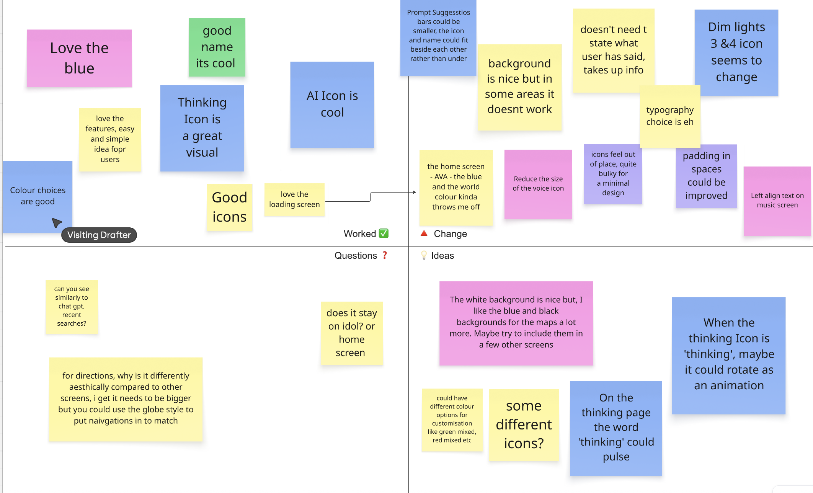

PROJECT SPECIFICATIONS
-
The time it took for this project was 3 Weeks.
-
Software used for this project: Figma and Visual Studio Code
-
This was a user interface project that created a smartwatch app.
-
The target audience was 16–25 year olds.
THE BRIEF
We were tasked with designing three smartwatch app screens, supported by a style guide, brand, and wireframes. The final submission should include high-resolution mockups.
RESEARCH
I began by browsing Pinterest to explore smartwatch app design and immediately noticed that nearly everything used dark mode. That sparked an idea—if I designed mine with a bright interface, it would stand out instantly.
I then examined three apps on my Apple Watch SE: Workout, Spotify, and Outlook. Workout emphasizes fitness tracking, iPhone syncing, and large, accessible icons. Spotify enables music control (though some icons are too small). Outlook offers streamlined email, calendar access, and quick voice replies. All three prioritize glanceability, quick actions, and dark color schemes. They’re built for brief, simple interactions—something I wanted to challenge by creating a visually bright and fluid experience.


IDEATION
We started with analogical connection exercises—linking unrelated ideas. My first concept combined Doctors and Blog into a practical voice-note app, but it felt too safe. I wanted something more experimental, so I created an AI smartwatch assistant that helps you on the go through voice commands and syncs seamlessly with your phone.
I brainstormed names inspired by J.A.R.V.I.S., eventually landing on AVA (Adaptive Virtual Assistant) for its simplicity. The visuals draw inspiration from Balatro’s liquid-like style—a reactive orb that listens, thinks, and acts. I refined sketches, added prompt suggestions, and designed a cohesive watch face. The concept blends AI personality, motion, and simplicity into one fluid design.


DESIGNING
AVA is designed to feel alive—an AI smartwatch assistant that moves, thinks, and responds naturally. I drew inspiration from how the brain works, specifically its neurochemicals like dopamine, serotonin, and oxytocin. Each represents a different emotion, so I built a color system around them: blue for calm (idle), orange for creativity (thinking), red for action, and pink for empathy. Each screen reflects AVA’s emotional state, connecting science and design.
Visually, I took cues from the fluid shader effects in Balatro. I recreated that look using JavaScript and shader code, building a soft, chemical-like background that moves in real time. For typography, I chose Helvetica Neue LT Pro 93 Black Extended for headings and Helvetica Neue Bold for body text— both clean, bold, and readable on small screens.
After early feedback, I built screens for prompts, maps, and music playback, refining icons and adding subtle gradients for clarity. The final design feels cohesive and alive—blending emotion, motion, and usability into a minimal, intelligent assistant that captures the feeling of thinking itself.
FEEDBACK
After presenting AVA, I received peer feedback that shaped the final design. The main points were readability and contrast. The swirl background, while visually interesting, made screens like the JFK search result hard to read. I replaced it with a clean white background, improving cohesion and accessibility.
It was also noted that the prompt screens felt unbalanced, so I reduced icon sizes, simplified shapes, and adjusted the layout for better visual harmony. I was encouraged to demonstrate real usage through an animation or prototype and to simplify the map screen into something like a compass. I redesigned it with a minimal compass layout and refined icons throughout. These changes made the design cleaner, more consistent, and easier to understand without compromising AVA’s identity.

REFLECTION
The smartwatch project produced 11 unique screens, a presentation, and a style guide. Time was the biggest challenge, but I stayed true to my concept rather than simplifying it. The critique was tough—some feedback felt unclear—but it pushed me to refine contrast, simplify layouts, and use the swirl effect more intentionally.
Despite the pressure, I enjoyed returning to coding in VS Code and experimenting with shaders. Overall, the project strengthened my design process and prepared me for more advanced work ahead.